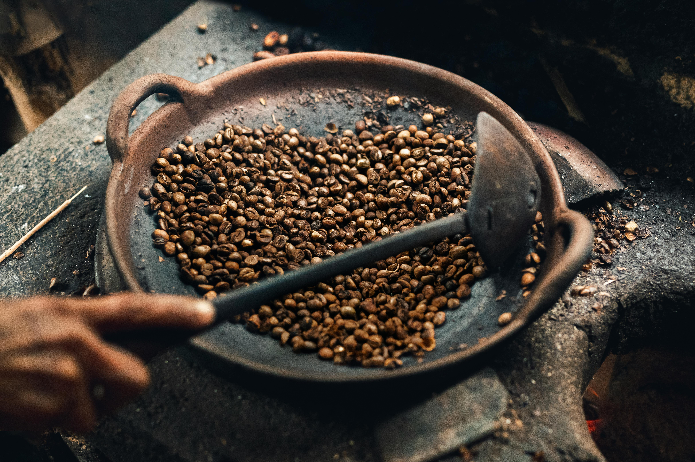

Beneath The Surface
Noir Brew was born from a lifelong love affair with coffee—its depth, its complexity, and the way it brings people together. Growing up in Italy, coffee wasn’t just a drink; it was a ritual, a moment of connection, and a reflection of craftsmanship passed down through generations. Mornings were filled with the rich aroma of fresh espresso, afternoons with the warmth of a slow-sipped cappuccino, and evenings with the hum of conversation over a well-brewed cup.
Beyond the café culture, we became fascinated with the journey of coffee—from the sun-drenched fields where beans are carefully cultivated to the intricate roasting process that unlocks their bold and delicate flavors. This passion led us to create Noir Brew, a brand dedicated to honoring the artistry behind every cup.
We source the finest beans, curate exceptional blends, and ensure that each sip embodies quality, tradition, and sophistication. Every step, from the hands of the farmers to the final pour, is treated with care and respect—so that what reaches your cup isn’t just coffee, but a story of heritage, craftsmanship, and pure indulgence.
Welcome to Noir Brew—where every cup is a journey.



Our Commitment
At Noir Brew, we believe that exceptional coffee begins long before it reaches your cup. It starts in the lush,
high-altitude regions of Costa Rica, where some of the world’s finest coffee is grown—cultivated by generations
of farmers who have perfected their craft with patience, skill, and care.
We are deeply committed to supporting the communities that make our handcrafted coffee possible. Through direct
partnerships with local farmers in Costa Rica’s renowned coffee regions, we ensure fair wages, sustainable farming
practices, and investment in the well-being of their families. By working closely with these communities, we help
provide access to better education, healthcare, and resources that empower future generations.
Beyond ethical sourcing, we celebrate the art of coffee by preserving traditional harvesting and processing
methods—ensuring that every bean is handpicked at peak ripeness and carefully roasted to perfection. This
dedication to craftsmanship not only honors the rich heritage of coffee cultivation but also delivers an
unparalleled experience in every sip.
When you choose Noir Brew, you’re not just enjoying premium coffee—you’re supporting the people, traditions,
and lands that make it possible.